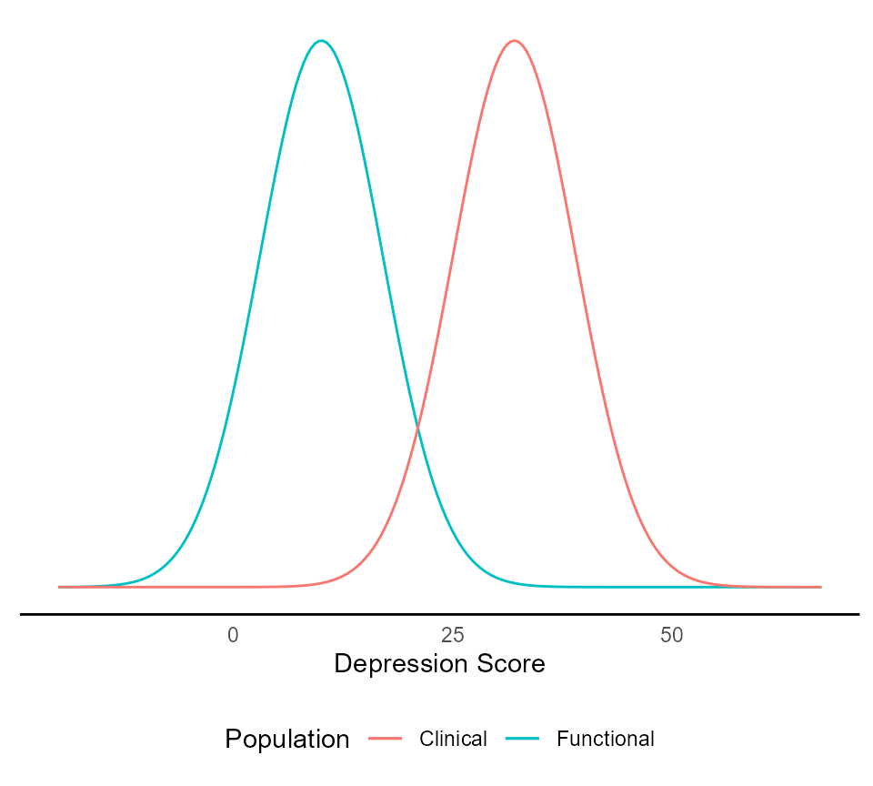
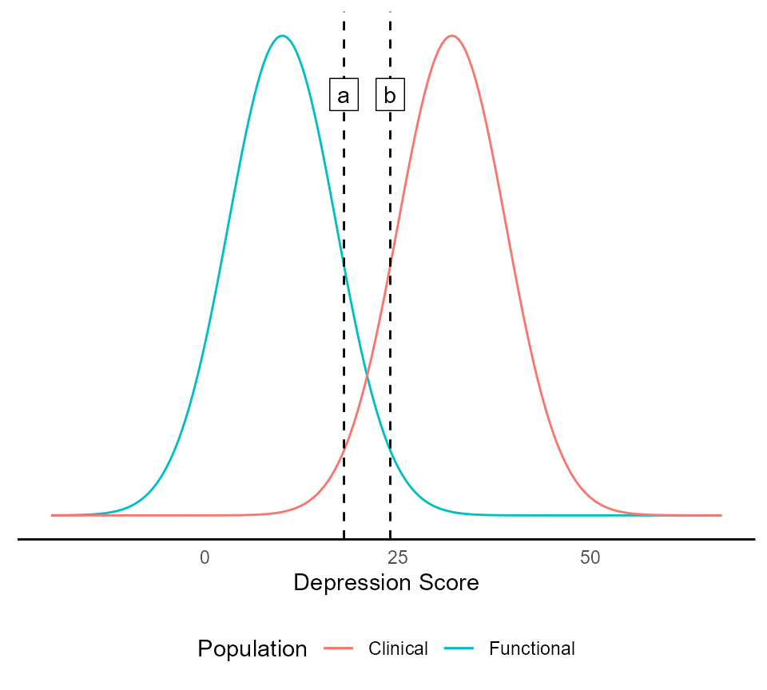
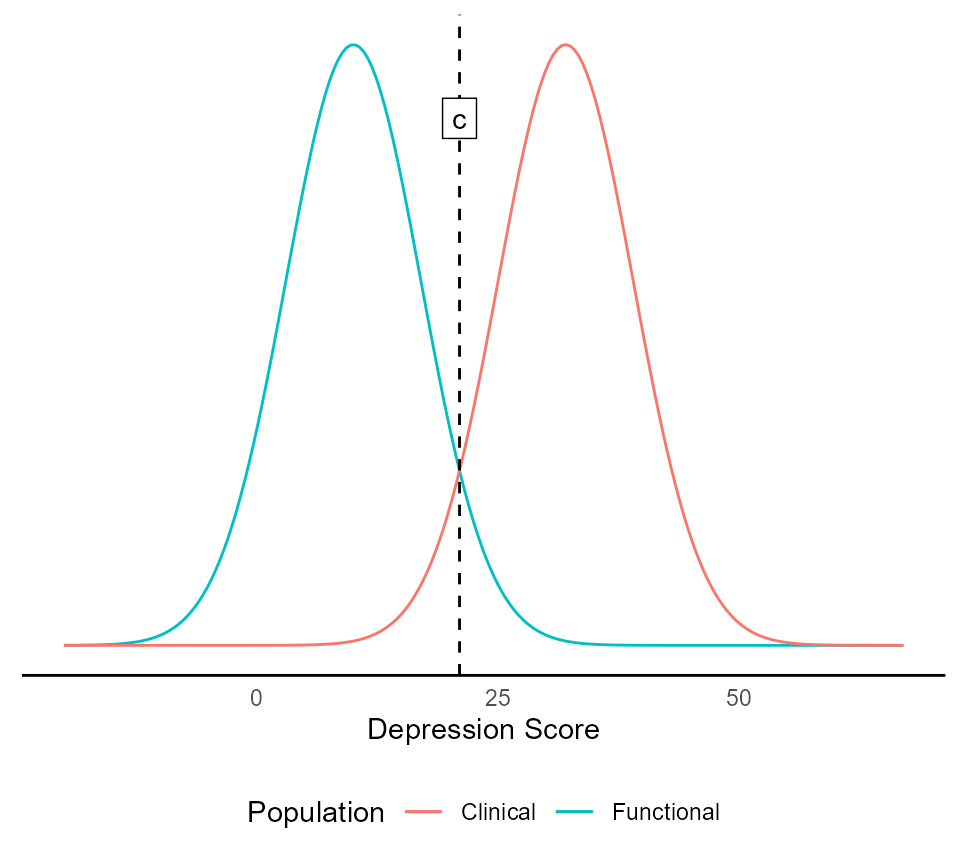
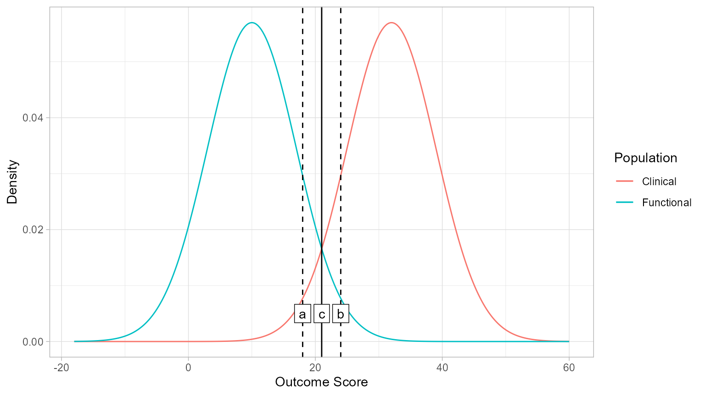

Clinical Significance Cutoffs
Benedikt Claus
11-06-2022
Source:vignettes/clinical-significance-cutoffs.Rmd
clinical-significance-cutoffs.RmdWhen conducting clinical significance analyses, you want to detect those patients that changed from the clinical population to the functional population. But how do you know that? In the clinical significance framework, this decision is based on whether a patient crosses a specific cutoff.
Jacobson et al. (1984) and Jacobson & Truax (1991) defined three cutoffs that can be used to determine if a patient moved from the clinical to the functional population, namely \(a\), \(b\), and \(c\). Below you can find more information on what the difference between these three cutoffs is, which one to choose and how different authors proposed to calculate them.
Jacobson & Truax
If you imagine a dimensional outcome, e.g., a measure of depression, the clinical and functional population should form two distinct distributions on this dimension. In this specific example (see figure below), the clinical population (red line) can be described as a normal distribution with M = 32 and an SD = 7. The functional population (blue line) can be described as a normal distribution with M = 10 and SD = 7.

a and b
A reasonable cutoff between the clinical and functional population should ly between those. Jacobson et al. (1984) and Jacobson & Truax (1991) proposed cutoffs \(a\) and \(b\) to be
\[a = M_{clin} - 2 SD_{clin}\\a = 32 - 2\cdot7\\a=18\] and
\[b = M_{fun} + 2 SD_{clin}\\b=10+2\cdot7\\b=24\] with \(M_{clin}\) and \(M_{fun}\) being the means of the clinical and functional population and \(SD_{clin}\) being the standard deviation of the clinical population. Of note is that both cutoffs incorporate the clinical population’s standard deviation but the “starting point” is different. In \(a\), it is the clinical population’s mean and in \(b\) it is the functional population’s mean.
Of importance here is the direction of beneficial effect. In this example, a lower depression score is beneficial to the patient. In other examples, the opposite may be true, e.g., in a measure of quality of life, where higher values are desirable. In this case, the plus and minus signs in the formulas above are switched.
If we incorporate both cutoffs \(a\) and \(b\) into the figure above, we get the following picture.

With overlapping distributions, \(a\) seems to be more conservative and \(b\) seems to be more liberal in deciding whether a patient moved from the clinical into the functional population.
c
A more reasonable cutoff, however, may be one that incorporates both, mean and standard deviation, of both populations. This is what \(c\) is designed to do. It is defined as
\[c = \frac{SD_{fun}M_{clin} + SD_{clin}M_{fun}}{SD_{fun} + SD_{clin}}\\c=\frac{7\cdot32+7\cdot10}{7+7}\\c=21\] with \(M\) and \(SD\) being the mean and standard deviation and the indexes \(fun\) and \(clin\) indicating the functional and clinical population. This cutoff lays in between both populations as can be seen in the figure below.
distributions +
geom_vline(xintercept = c, linetype = "dashed") +
geom_label(aes(label = "c"), x = c, y = 0.05, label.r = unit(0, "lines"))
Because of that, \(c\) is generally recommended. So, if you have descriptive statistics for the functional population, you should always use \(c\)! You This ensures comparability of clinical significance analyses. If you deviate from this approach, clearly explain why you did that and give detailed reasons for doing so. An obstacle might be the availability of descriptives for the functional population that are needed to calculate \(c\). However, these should be known for the most common instruments in psychological research. If not, it might be a good idea to determine those metrics first!
Plot Cutoffs
A simple way to check your cutoffs is with
check_cutoff()
library(clinicalsignificance)
check_cutoff(m_clinical = 32, sd_clinical = 7, m_functional = 10, sd_functional = 7, type = "c")
Hageman & Arrindell
Hageman & Arrindell (1999) proposed \(a\), \(b\), and \(c\) to be expressed as true scores by principles of classical test theory. To obtain the true scores for \(a\), \(b\), and \(c\), i.e., \(a_{true}\), \(b_{true}\), and \(c_{true}\), the standard deviations in the formulas proposed by Jacobson & Truax (1991) must be multiplied with the respective reliability.
\[a_{true} = M_{clin} - 2 SD_{clin} \sqrt{r_{xx(clin)}}\]
with
\[\sqrt{r_{xx(clin)}} = \frac{SD_{clin}^2 - S_E}{SD_{clin}^2}\]
and
\[S_E = SD_{sample}\sqrt{1 - r_{sample}}\]
with \(SD_{sample}\) and \(r_{sample}\) being the standard deviation and reliability coefficient of a specific sample. This sample may be the clinical or the functional population. The reliability coefficient should, again, be a measure of internal consistency.
\(b_{true}\) is defined as
\[b_{true} = M_{fun} + 2 SD_{clin}\sqrt{r_{xx(clin)}}\] Bear in mind that the direction of the beneficial is of importance here as well. The formulas above are for outcome in which a lower score indicates a beneficial outcome. If higher values are desirable, the plus and minus signs in the formulas for \(a_{true}\) and \(b_{true}\) must be switched.
\(c_{true}\) is defined as
\[c_{true} = \frac{SD_{fun}\sqrt{r_{xx(fun)}}M_{clin} + SD_{clin}\sqrt{r_{xx(clin)}}M_{fun}}{SD_{fun}\sqrt{r_{xx(fun)}} + SD_{clin}\sqrt{r_{xx(clin)}}}\] with
\[\sqrt{r_{xx(fun)}} = \frac{SD_{fun}^2 - S_E}{SD_{fun}^2}\]